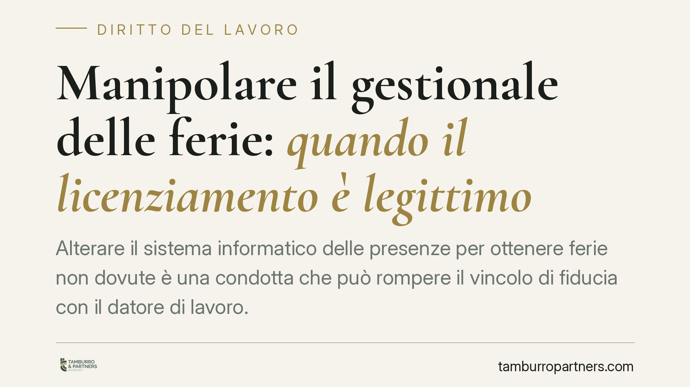

Manipolare il gestionale delle ferie: quando il licenziamento è legittimo
Alterare il sistema informatico delle presenze per ottenere ferie non dovute è una condotta che può rompere il vincolo di fiducia con il datore di lavoro. Nel pubblico impiego la questione si intreccia con la disciplina sulle false attestazioni e sul valore probatorio dei log informatici. Vediamo i profili normativi e cosa rileva davvero in giudizio.

Il fatto
Un dipendente pubblico avrebbe alterato il gestionale interno delle presenze per accreditarsi giorni di ferie non spettanti. Il datore di lavoro ha reagito con il licenziamento disciplinare, contestando non un semplice errore di registrazione, ma una manipolazione volontaria dei dati.
È una precisazione essenziale. Un disallineamento nel software può dipendere da un difetto tecnico o da una svista. La condotta sanzionabile è altra cosa: presuppone la coscienza e la volontà di ottenere un vantaggio non dovuto. È l'elemento soggettivo a spostare la valutazione dal piano dell'irregolarità a quello dell'illecito disciplinare.
> Nota: alcune fonti divulgative riferiscono una recente ordinanza della Cassazione Sezione Lavoro sul tema. Alla data di redazione gli estremi esatti (numero e anno) non risultano verificabili con certezza. Il presente contributo si concentra pertanto sui principi consolidati, senza attribuire affermazioni a una pronuncia non confermata.
Inquadramento normativo
Nel lavoro privato la reazione datoriale si fonda sull'obbligo di diligenza e fedeltà (artt. 2104 e 2105 cod. civ.), sul potere disciplinare proporzionato all'infrazione (art. 2106 cod. civ.) e sul licenziamento per giusta causa quando la condotta non consente la prosecuzione, neppure provvisoria, del rapporto (art. 2119 cod. civ.).
Nel pubblico impiego il quadro è più articolato. Accanto alle norme civilistiche opera il D.Lgs. 165/2001. In particolare, l'art. 55-quater prevede il licenziamento disciplinare per la falsa attestazione della presenza in servizio realizzata anche mediante l'alterazione dei sistemi di rilevazione. La manipolazione del gestionale delle presenze rientra in modo naturale in questa fattispecie. A ciò si aggiungono le previsioni del CCNL di comparto, che tipizzano le infrazioni e le relative sanzioni.
Il licenziamento, in entrambi i regimi, presuppone il rispetto del procedimento disciplinare. L'art. 7 della L. 300/1970 impone la contestazione scritta e l'audizione del lavoratore, con un termine minimo a difesa (di norma cinque giorni) per rendere le giustificazioni prima dell'irrogazione della sanzione.
Le prove informatiche e i controlli
Il punto decisivo è spesso probatorio. La manipolazione emerge dai log di sistema, cioè dalle tracce che registrano accessi e modifiche. La loro utilizzabilità va misurata sulla disciplina dei controlli datoriali.
L'art. 4 della L. 300/1970 regola gli strumenti dai quali può derivare un controllo a distanza dell'attività lavorativa. Le informazioni raccolte tramite strumenti di lavoro sono utilizzabili a fini disciplinari a condizione che il lavoratore sia stato adeguatamente informato sulle modalità d'uso e sui controlli, e nel rispetto della normativa in materia di dati personali.
La giurisprudenza ammette inoltre i cosiddetti controlli difensivi, diretti ad accertare condotte illecite già sospettate e non a monitorare in via generale la prestazione. La linea di confine è delicata: l'irregolarità nell'acquisizione della prova può comprometterne l'utilizzabilità e, con essa, la tenuta del licenziamento.
Proporzionalità e vincolo fiduciario
La sanzione espulsiva richiede un giudizio di proporzionalità. Non basta la violazione formale: occorre valutare gravità della condotta, elemento soggettivo, ruolo del lavoratore e contesto.
Un dato ricorre nelle decisioni in materia: ciò che incrina il rapporto non è tanto l'entità del danno economico, che può essere modesta, quanto la lesione della fiducia. Alterare consapevolmente i dati di presenza colpisce l'affidamento del datore sulla correttezza del dipendente. È questa rottura, più della quantificazione del pregiudizio, a poter giustificare la sanzione più grave.
Cosa fare in concreto
- Distinguere con precisione l'errore di registrazione dalla manipolazione volontaria: solo la seconda integra l'illecito disciplinare grave.
- Verificare che la contestazione sia scritta, specifica e tempestiva, e che sia stato concesso il termine a difesa previsto dall'art. 7 L. 300/1970.
- Conservare e analizzare i log di sistema, controllando data, ora e utenza delle modifiche.
- Accertare che l'informativa sull'uso degli strumenti e sui controlli fosse stata resa, per valutare l'utilizzabilità delle prove ex art. 4 L. 300/1970.
La regolarità della procedura e la legittimità delle prove raccolte restano profili sempre valutabili prima di ogni impugnazione.
---
Contributo informativo a cura di Tamburro & Partners - Avv. Giuseppe Tamburro. Non costituisce parere legale.
Ogni storia di lavoro ha i suoi tempi.
Se gestisci HR e vuoi un confronto su contenzioso, ispezioni o licenziamenti, scrivi allo studio. Ti rispondiamo entro un giorno lavorativo.